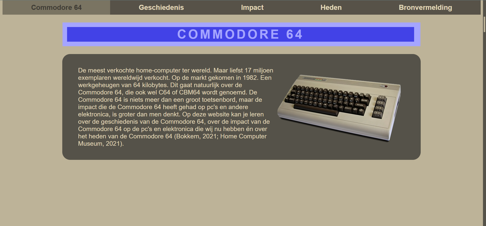
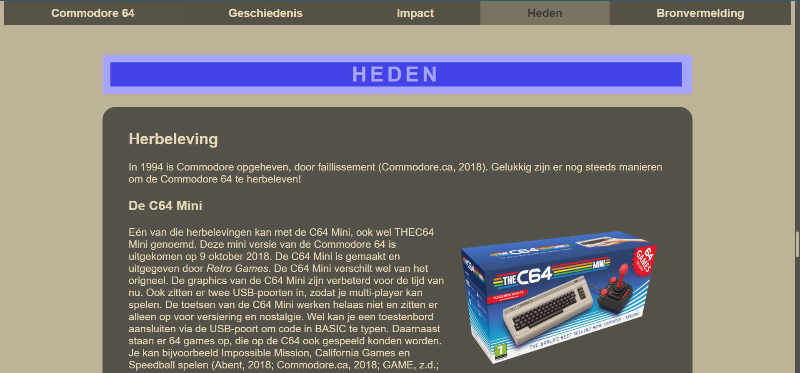
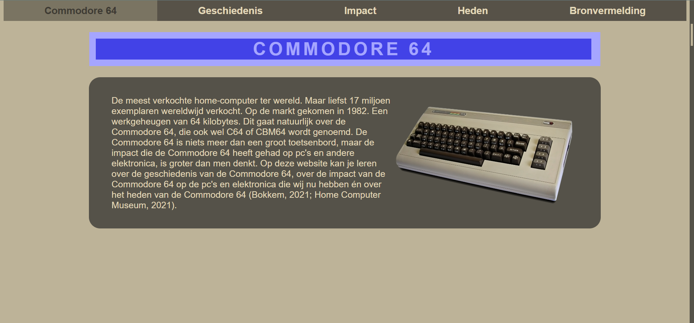
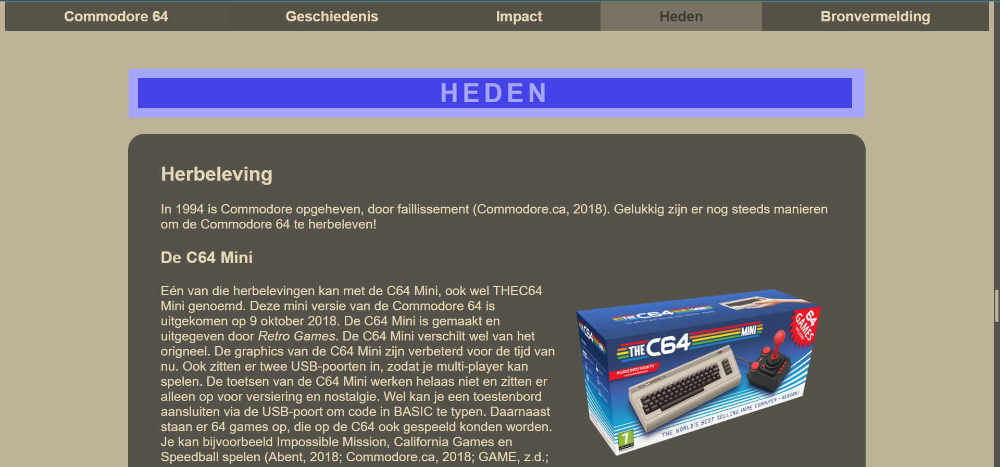

Commodore 64 Website
This project is a retro-themed website created for the course Tech Philosophy 1. The assignment required building a website using only HTML and CSS on a historical technical topic of our choice. I chose the Commodore 64, one of the most iconic home computers of the 1980s.
To stay true to its history, I designed the entire website in the visual style of the original Commodore 64 -including its color palette, layout and overall aesthetic. This approach gave the project a nostalgic look while highlighting the essence of the device.
As one of the first websites I ever created, this project was an important step in learning the fundamentals of web development, structure and styling.
 


